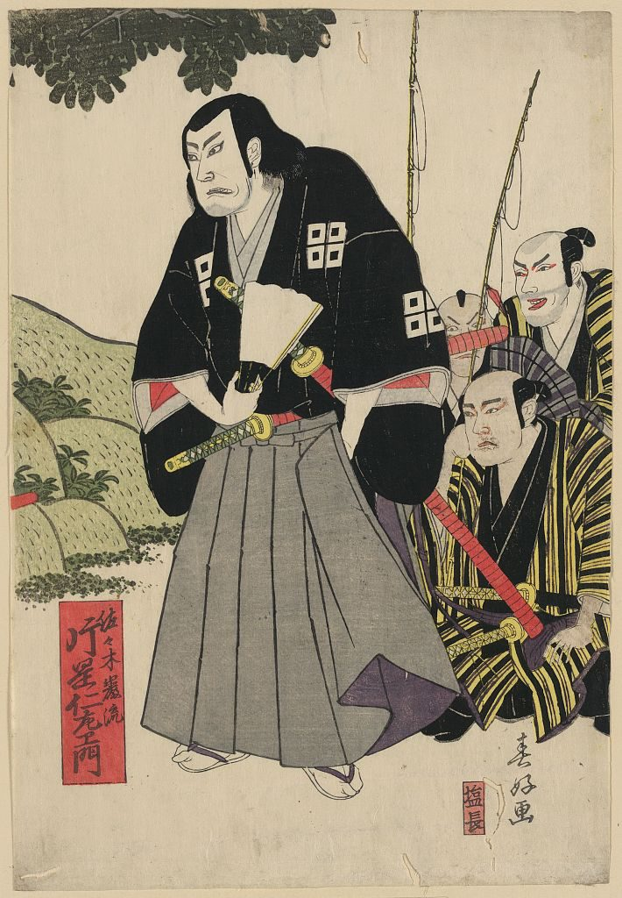
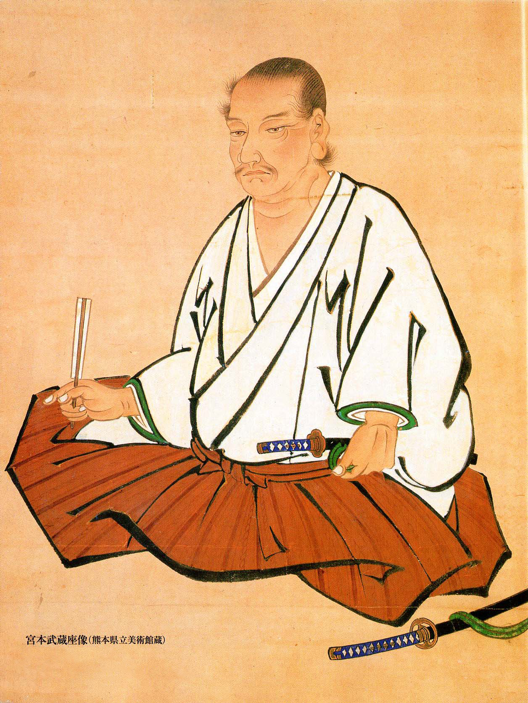

- Sasaki Kojirō was born in Fukuji, Japan during the early Edo period.
- He was known as the "Demon of the Western Provinces" as a master swordsman.
- He was known to be flamboyant and often wore cloths of a Kabuki actor.
- He was known for the 'Ganryu' swordstyle which was notable for fast and erratic movements.
-

|
- Miyamoto Musashi was born in the Harima Province in 1584.
- He was known as the founder of the 'Nito Ichi-ryū' style of swordsmanship.
- He wrote "the Book of the Five Rings" or (Gorin no Sho) which was an important Japanese treatise on strategy.
- He fought on won more than 60 life or death duels and ended his career as invincible.
-

|